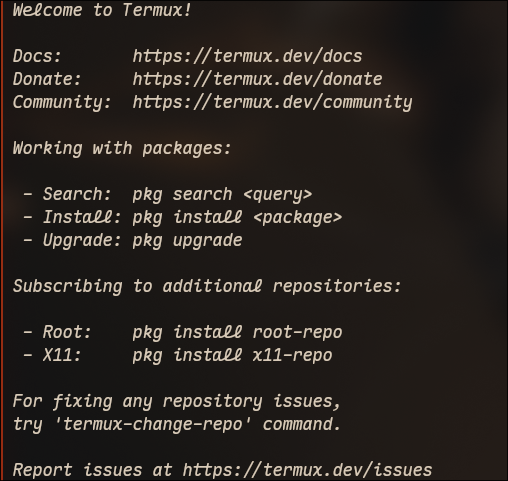

connecting to termux on android via ssh

i have been using termux on my android phone for a while now. i use it mostly with the pi agent and mimo v2.5 to manage my personal finances.
phone screens are not pleasant to type on, so first thing i want to do is ssh into my phone from my laptop.
here is how i did it.
the termux website has a tutorial for remote access that is very helpful. i wanted to use openssh to connect to my phone, and the process is pretty standard, except for the fact that my android is not rooted, meaning the connection has to be done to port 8022 instead of 22.
for openssh all i had to do was:
-
install it from pkg
bash pkg upgrade pkg i openssh -
run sshd to start the ssh server
bash sshd -
set password
bash passwd -
get the phone's ip. use the line with format
xxx.xxx.x.xxwherexis a number and the code does not start with127.x.x.x(mine looked like192.xxx.x.xx)bash ifconfig | grep inet -
ssh into it:
bash ssh -p 8022 192.xxx.x.x
however, trying to connect to openssh's sshd was getting me a connection reset by peer error. it seems it is an error that sometimes happens with openssh on termux, and the solution was to use dropbear instead. they have an awesome website, and a seemingly solid github, so i figured i'd give it a shot.
after killing sshd on termux:
pkill sshd
and installing dropbear:
pkg i dropbear
i added it to termux-services1 to always run:
sv-enable dropbear
and now ssh into my android phone works normally.
i recommend trying openssh before dropbear in any case. for some of my devices openssh works.
-
which i had already installed with
pkd i termux-services↩
Comments